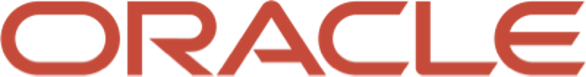
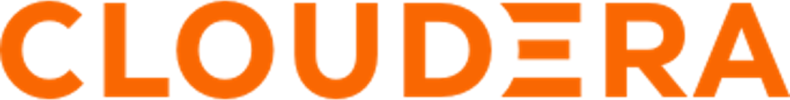
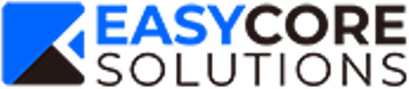

Sec. 01 — Two axes
Domestic
금융·기업의 데이터를 분석 가능한 자산으로 만듭니다. 마케팅 플랫폼 구축부터 이상탐지, 지식 그래프까지.
Global
개도국 공공기관의 IT 현황 진단부터 데이터 거버넌스, 플랫폼 구축, 기술 이전까지 전 과정을 수행합니다.
Sec. 02 — Solutions
Sec. 03 — ODA Digital Transformation
정책 보고서는 컨설팅사가, 시스템은 SI가 만듭니다. 그 사이 개념 모델링 단계가 비어 있어 성과로 이어지지 못하는 경우가 많습니다. 이오그램은 그 공백을 메웁니다.
Step 01
"무엇이 문제인가"
Step 02
"어떻게 구조화하나"
Step 03
"무엇을 만드나"
Step 04
"어떻게 지속하나"
Sec. 04 — Partners & Clients
Fig. 01 — AI Partnership
비지도학습 기반 패턴·공간분석 AI 엔진에, 도메인 컨설팅과 시스템 구축 역량을 결합합니다. 요건 정의부터 아키텍처 설계, 구축, 안정화까지 이오그램이 단일 책임으로 수행합니다.
Schmoss Lab
AI 엔진 · 알고리즘 · 모델
eogram
컨설팅 · 아키텍처 · 구축 · 운영 · 사업관리
Fig. 02 — Technology Partners


Fig. 03 — Solution Partners

쉬모스랩Fig. 04 — Clients
Sec. 05 — History
2021
취향 기반 여행 커뮤니티를 구축하며 창업했습니다.
2022 — 23
광주은행·경남은행·하나은행과 협력해 마케팅 플랫폼 구축 프로젝트를 수행했습니다.
2024 — 25
쉬모스랩과 전략적 파트너십을 맺어 비지도학습 AI 엔진을 확보하고, 포스코인터내셔널 빅데이터 플랫폼 구축, IBK기업은행 생성형 AI 실증사업 등으로 사업 영역을 넓혔습니다.
2026 — Now
캄보디아 NPCA 기능강화사업에 참여해 데이터 플랫폼(DW·FDS·SSBI) 구축을 맡았습니다. 온톨로지 기반 지식체계를 갖추고 eo-Insight를 자체 제품으로 확보했습니다.
Sec. 06 — Organization
SM
시장 분석 · 브랜드 전략 · 캠페인
R&D
온톨로지 · 지식그래프 · 방법론
ABC
AI · 빅데이터 · 클라우드 인프라
P&S
사업관리 · 구축 · 안정화
PD(Product Direction)를 중심으로 4개 LAB이 유기적으로 협력합니다. "LAB"은 연구와 개발을 의미합니다 — 우리는 스스로 연구하는 조직입니다.
Sec. 07 — Contact
프로젝트 문의, 컨소시엄 제안, ODA 사업 협업 — 무엇이든 편하게 보내주세요.